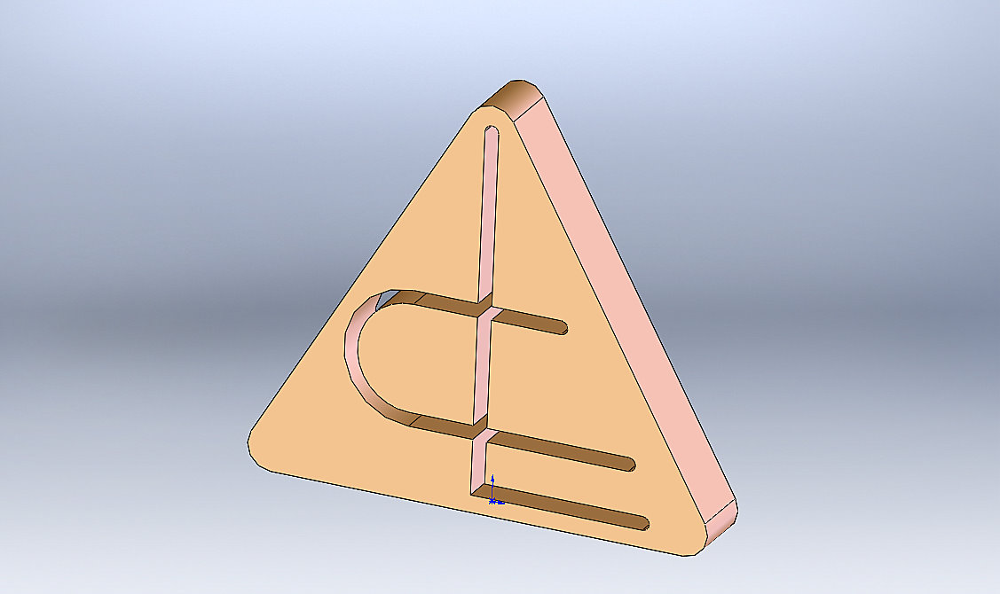

LASEC USINAGEM
Usinagem de Precisão CNC
ESTUDO DE CUSTO DE FABRICAÇÃO
Bico ROMI PCO28 (Alta e Baixa)
Orçamento 050/2026 — ENGEPLAST
Documento de Uso Interno - Confidencial

Hora-máquina LYNX 220LM (produção): R$ 96,35/hora | (setup/prog/insp — 1,5×): R$ 144,52/hora (fonte: planilha custos_ferramentaria lasec.xls aba "Custos 2026")
CIF: 25% sobre (Fixos + MOD) | Material: R$ 0,00 — fornecido pelo cliente | Anodização: por conta do cliente (não inclusa)
Cliente: ENGEPLAST | Peça: Bico ROMI PCO28 Alta e Baixa (bico duplo)
Máquina: Doosan LYNX 220LM — 2 fixações (troca de castanha), corte por bedame
Lote: 30 peças | Ciclo aprovado (PROCESSO rev.1): 285 s = 4,75 min/pç
Fonte de tempo: ESTIMATIVA DE ENGENHARIA (peça nova, sem as-built) — ⚠️ produção real tende a ser 1,5×-2× maior, validar na 1ª peça
| Item | Custo Interno LASEC | GRV Mercado SP | Diferença (base do lucro) |
|---|---|---|---|
| Taxa torno CNC (produção) | R$ 96,35/h | R$ 156,28/h | +62,2% |
| MOD do lote (2,375h) | R$ 228,83 | R$ 371,17 | R$ 142,34 |
Custo total do pedido (30 peças): R$ 918,31 → R$ 30,61/peça
PROCESSO_FABRICACAO rev.1 aprovado por Alexandre (27/07/2026): bore Ø18,80 furo simples (furado de uma vez só + acabamento ±0,1mm), 2 fixações na LYNX, MP e anodização por conta do cliente.
⚠️ Atenção — tempo é estimativa: por calibração dos as-built históricos, a produção real tende a ser 1,5×-2× maior que a estimativa. Recomenda-se validar o ciclo na 1ª peça antes de compromisso de volume; se o real subir, o custo/pç sobe proporcionalmente na parcela de MOD+CIF.